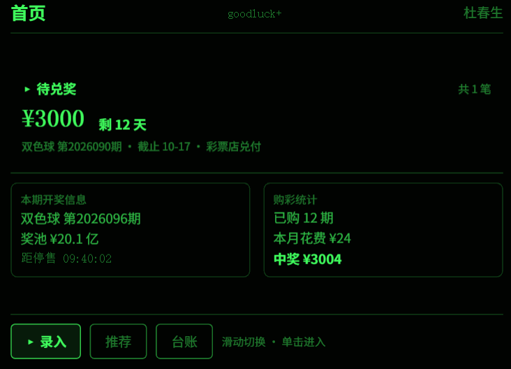
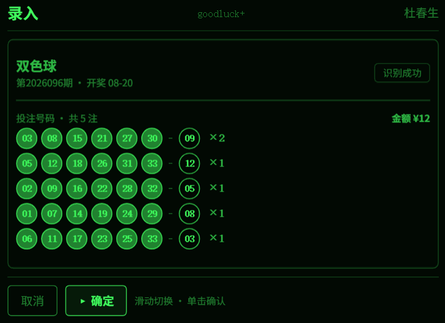
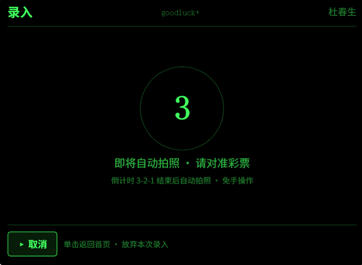
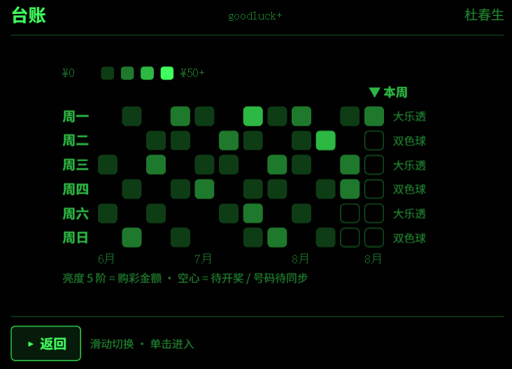
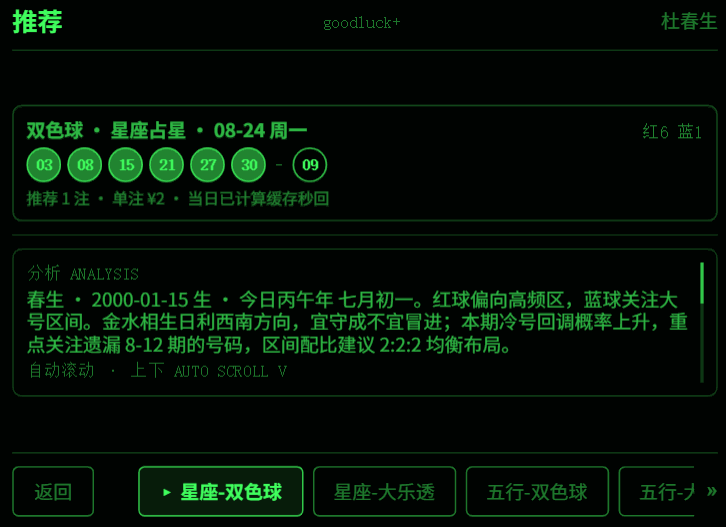
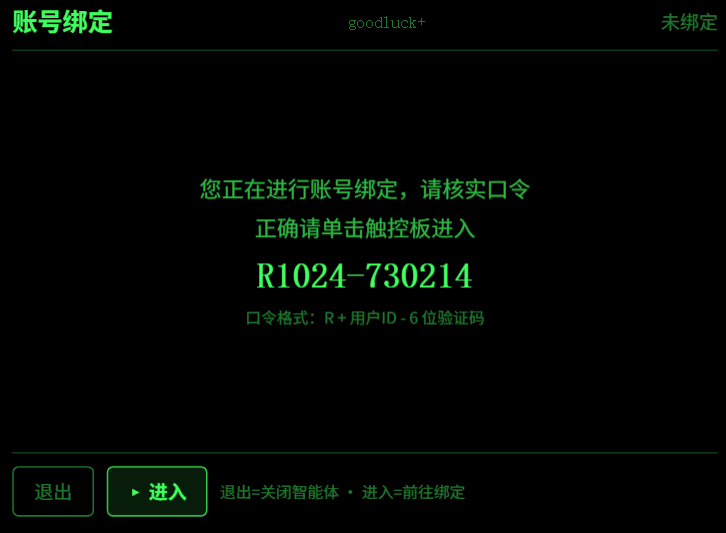
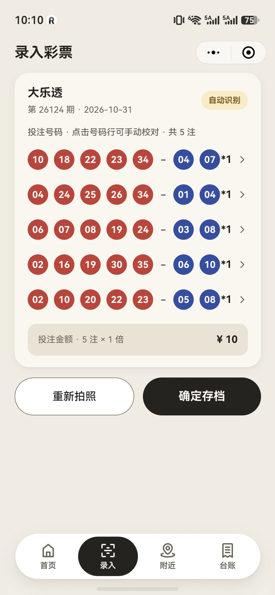
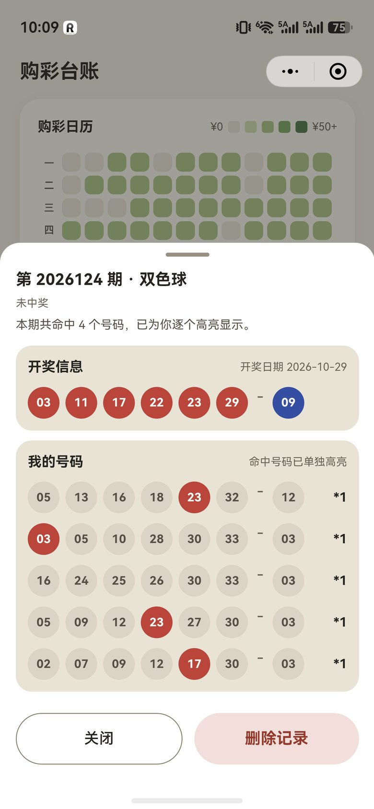
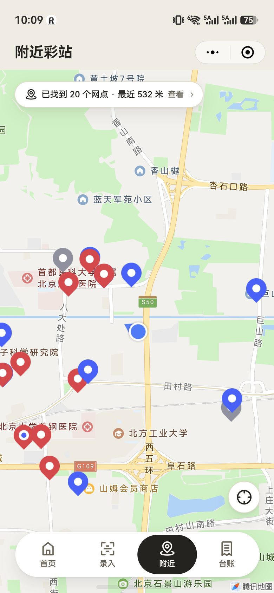

一张主状态卡，说清今天要做什么
待兑奖 > 待开奖 > 去录入，优先级自动排序。待开奖时给出停售倒计时，精确到秒。
首页 · 状态聚合纸质票散在钱包和相册里，中没中奖靠自己翻；等到想起去兑，60 天期限已经过了。彩票小助手要解决的，就是这段"之后"的事。
它是一款运行在微信里的彩票管理工具：用相机把纸质票变成结构化数据，用开奖日历自动判断每一注的结果，用一张台账把过去 12 周的购彩轨迹摊开在眼前。不卖票、不代购、不预测输赢 —— 只负责让你买得明白、记得清楚、该兑就兑。
相机取景框对准票面，期号、号码、倍数、金额一次读全，5 注也能一次认完。
票据存档即触发比对；开奖结果同步完成后，命中的号码逐个高亮标出。
首页优先展示待兑奖：中奖金额、剩余天数、兑奖渠道，金额过万会提示去彩票中心。
从第一次配置偏好，到拍票、认号、存档、比对、兑奖 —— 每一步都在同一个入口里，底部四个标签随时切换。
待兑奖 > 待开奖 > 去录入，优先级自动排序。待开奖时给出停售倒计时，精确到秒。
首页 · 状态聚合取景框对准整张票，或从相册选图，走同一条识别链路。期号、注数、倍数一并读出。
录入 · 视觉识别半屏校对抽屉：点选号码圆圈改号、步进器调倍数。双色球 6+1 与大乐透 5+2 各自适配。
校对 · 手动修正保存票据即触发开奖比对：该期已开奖直接判，票面日期已过先补同步开奖结果，未来期保持待开奖。
比对 · 自动兑奖一格一期，行是开奖日、列是周。金额分 5 阶深浅，点格子直接筛出那期买的票。
开奖号码与我的号码逐球对照：中的那几颗亮起来，没中的灰下去，还差几个一眼就懂。
详情 · 逐球高亮按当前位置拉出周边网点，红蓝双色区分类型，顶部一条提示告诉你有多少个、最近多远。
附近 · 地图检索星座占星与五行推命两套独立体系，按你的姓名与生日生成号码，附分析摘要与娱乐免责说明。
推荐 · 娱乐玩法Rokid 智能眼镜端复用同一份数据：查最近一期开奖、看今天买了哪些票、听一段号码推荐。单绿 AR 界面，只保留最关键的一行信息。






下面全部是真实运行界面，不是设计稿。
首页只有一件事重要：现在最该处理的是哪张票。系统按"待兑奖 > 待开奖 > 去录入"自动选出主状态，其余信息退到下面。
不需要只对准某一注，也不需要裁掉票根。四角引导线会亮起来，提示"整张票都在框内、画面稳定"就可以按下快门。
票面上有几注，就还原几注。红球蓝球按区域分色排开，期号与开奖日期一并填好，右下角算好总金额。

像代码提交图一样排布：一行是一个开奖日 —— 周一三五是大乐透，周二四六日是双色球。一格一期，颜色越深金额越高。
点开任意一条记录，抽屉里上半是当期开奖号码，下半是我的号码。命中的球单独点亮，没中的自动褪成灰底，一句"共命中 4 个号码"收尾。

打开地图，周边网点一次性落点。红色与蓝色区分网点类型，顶部一条提示直接告诉你"已找到多少个、最近多远"，不用自己数。

第一次需要配置一次偏好，之后每次从拍票这一步开始。
默认彩种、推演方式、姓名生日，一次填完长期生效。
仅首次取景框对准整张票，识别号码与期号。
有偏差就改号调倍数，确认后写入台账。
开奖结果同步后逐球比对，命中的高亮。
待兑奖置顶首页，显示截止日与兑奖渠道。
票面识别、开奖同步、期号推算这些容易出错的环节，都在服务端兜住。
以微信身份区分用户，手机、PC、眼镜看到的是同一本台账。令牌失效自动重新登录，不用手动处理。
整张票一次性识别期号、号码、倍数与日期；识别为空会自动重试一次，仍失败才提示手动校对。图片不落盘。
期号只数开奖日，并已内建春节、国庆等休市区间 —— 不会出现"提前一期开奖"的错位比对。
浅色是暖砂桌面上的三叠暖纸，深色是暖炭底上的暖褐卡。文字与状态色全部按对比度实算校准。
彩票的规则跟时间、金额、奖级都有关，应用会在对应位置提示，也在这里先讲清楚。
自开奖之日起 60 个自然日内兑奖，逾期作弃奖处理。应用会在首页持续提醒剩余天数。
单注奖金低于 1 万元可在任意彩票店兑付；达到或超过 1 万元，须前往当地彩票中心办理。
第 26014 期（2026-02-02）起由 9 档调整为 7 档，固定奖随奖池浮动：摇奖前奖池 ≥ 8 亿时按高档计。